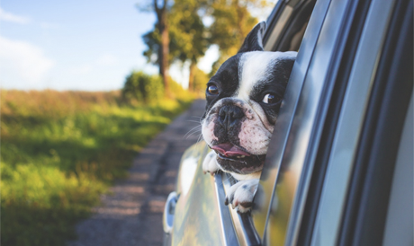
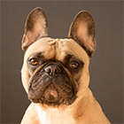
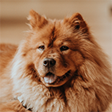
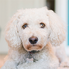
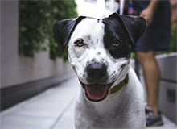
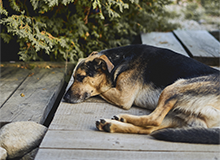

{kind=link}
Правильный рацион для взрослого пса
Читать статьюПитомник породистых животных рядом
с вашим домом
Животные как дети - им нужны мы.
О питомнике
Наш питомник — не просто дом для животных, а семья из разных пород собак и кошек.

- Лучшие представители своей породы
- Сбалансированый рацион питания питомца
- Ежедневный уход и тренировки
- Веселье, свежий воздух и отличная компания
Наши породы
Францезский бульдог

Идеальный вариант городской собаки — они входят в тройку самых популярных собак на планете. Любят короткие прогулки и хорошо поспать.
Посмотреть щенковЗолотистый ретривер
Добродушные, ориентированные на людей собаки. Они отлично ведут себя с детьми и больными. Могут быть повадырями.
Посмотреть щенковЧау-чау

Эти собаки с характером. Они всегда серьезны но временами проявляют характер.
Посмотреть щенковПудель

Активные и компанейские собаки. Любят много гулять, обладают отличным чувством юмора.
Посмотреть щенковОтзывы хозяев
Татьяна Зверева
Xочу выразить большую благодарность Вам за это чудо – малыша, который появился у нас в семье. Деликатный, милый, ласковый и нежный белоснежный Уник, в которого я влюбилась с первого взгляда, увидев его фотографию на сайте Вашего питомника. Очень умный малыш!
 Больше отзывов можной найти у нас в группе ВК
Больше отзывов можной найти у нас в группе ВК
Всё о животных
Мы ведем активный блог про наших животных в социальных сетях — присоединяйстесь к нам. Полезные материалы про обучение, дрессировку, питание.


Бывает ли собачья депрессия?
Читать статьюКонтакты
Адрес
Московский проспект д .105
Режим работы
Каждый день с 10:00 до 22:00